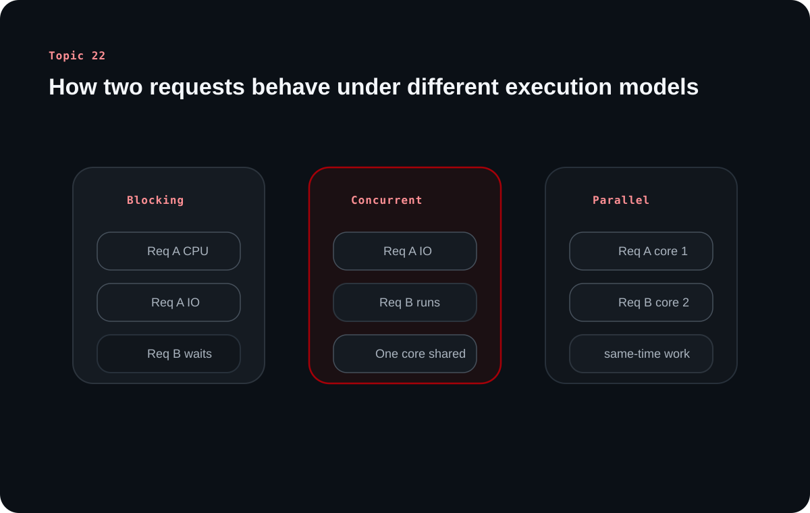

Concurrency and Parallelism: IO-Bound vs CPU-Bound Work
Topic 22 closes the series by showing why backend servers cannot afford to handle work one request at a time. The real question is not whether a system does many things, but how it shares time, cores, and state while doing them.
The source keeps returning to one practical idea: most backend work waits on IO far more than it burns CPU. That is why concurrency models matter so much, and why parallelism only solves part of the performance story.
Chapter 1
Backend servers need concurrency because waiting is the dominant cost
The source starts from an operational reality: web servers must keep serving requests even when one request is blocked on a database or another network call.
Handling requests one by one wastes capacity and creates queues immediately
A backend server receives many requests at once, not in a neat single-file sequence. If it processes only one request from start to finish before touching the next, later requests sit idle even when the machine is capable of doing useful work.
That is why simple synchronous handling does not scale well for typical web traffic. The system spends too much time waiting while users keep arriving.
Most backend latency is spent waiting on IO rather than executing CPU instructions
The source emphasizes that a large part of backend work is waiting: database queries, cache calls, disk reads, upstream APIs, and message brokers all introduce pause time. During that wait, the CPU is often mostly idle unless some other request can use the gap.
This is why concurrency is so important for backend systems. It lets the server keep progressing other work while one request is paused on IO.
Clarified note
IO-bound means the request mostly waits on external systems. CPU-bound means the request mostly spends time actively computing.
Chapter 2
Concurrency and parallelism solve different parts of the problem
The source carefully separates scheduling many tasks from physically running many tasks at once.
Concurrency is structured interleaving; parallelism is true simultaneous execution
Concurrency is about managing multiple tasks so progress continues even when one task is blocked. A single core can be concurrent by switching between runnable tasks during wait periods.
Parallelism is about multiple cores executing work at the same time. It becomes especially useful when the workload is CPU-heavy and there is real computation to spread across cores.
Teaching diagram

A simple comparison: blocking queues work, concurrency overlaps wait with other useful work, and parallelism uses multiple cores for true simultaneous execution.
IO-bound and CPU-bound workloads need different kinds of help
If a request spends most of its life waiting on IO, concurrency usually brings the biggest win because the system can fill those wait windows with other tasks. If a request spends most of its life doing real computation, then extra cores and parallel execution matter more.
The source notes that most backend request handling is IO-bound, which is why event loops, lightweight tasks, and cooperative scheduling matter so much in practice.
Chapter 3
Threads, event loops, and goroutines are different answers to the same scheduling problem
The article source does not present one universal winner. It shows that each model trades simplicity, overhead, and failure modes differently.
OS threads are powerful, but they carry scheduling and memory overhead
Threads are operating-system managed execution units. They are flexible and familiar, but each thread costs memory, stack space, and context-switch overhead. A naive one-thread-per-request model becomes expensive under heavy concurrency.
Threads also share memory easily, which is convenient for communication but risky because shared mutable state introduces race conditions and locking complexity.
Event loops stay efficient for IO-bound work by yielding during waits
In an event-loop model, a small number of threads keeps registering IO work and resumes tasks when the operating system reports completion. This avoids the cost of large thread counts and works especially well when requests wait often and compute little.
The constraint is just as important as the benefit: if CPU-heavy work blocks the loop, many unrelated requests suffer because the single coordination path is stalled.
Virtual threads and goroutines aim to keep the mental model simple while reducing runtime cost
The source points to goroutines as a lightweight runtime-managed form of concurrency. Instead of tying every logical task directly to an OS thread, the runtime multiplexes many routines over a smaller set of worker threads.
This keeps the programming model approachable while scaling better for large numbers of concurrent tasks. Similar ideas appear in other runtimes through virtual threads or structured task systems.
Chapter 4
Async syntax helps readability, but it does not remove runtime limits
The source treats async and await as a useful abstraction, not a magical performance feature.
Async functions pause and resume around waits instead of blocking the whole server
Async and await make callback-style flow easier to read, but underneath they still rely on a scheduling model that suspends work at wait points and resumes it later. That is why async code feels sequential while still enabling concurrency.
This abstraction is excellent for IO-heavy work, because each await becomes a chance for the runtime to progress something else.
CPU-heavy work should be isolated instead of blocking the same path as IO-heavy traffic
If the workload is image processing, video transformation, encryption, or large analytical computation, simply writing async code is not enough. The compute still has to happen somewhere, and if it happens on the event loop or shared request path, latency spikes for everything else.
That is why the source encourages matching the execution model to the workload shape: use concurrency for wait-heavy request flow and use parallel compute paths when the work is truly CPU-intensive.
Chapter 5
Shared state is where concurrency stops being only a performance topic
The final part of the source brings the discussion back to correctness. Once multiple tasks can interleave, state updates can collide unless the system coordinates them.
Race conditions happen when two tasks read and write the same state without coordination
The classic example is two workers incrementing or decrementing the same value. If both read the old value before either write becomes visible, one update gets lost and the final state is wrong.
This is not limited to threaded systems. Even single-threaded async programs can have race-like bugs when independent flows touch shared state across awaits.
Locks, mutexes, atomics, and message passing are all attempts to preserve correctness
The source mentions synchronization primitives and safer coordination models because concurrency is not useful if it corrupts data. Locks and mutexes serialize access, atomics help with small low-level operations, and message passing can reduce direct shared-memory hazards.
The right choice depends on the language, runtime, and workload, but the mental model remains constant: once work overlaps, state ownership and synchronization have to be designed explicitly.
What to remember
Use concurrency to avoid wasting time during waits. Use parallelism when real computation needs more cores. Design shared state carefully, because correctness bugs can hide inside otherwise fast systems.
Overall takeaway
Choose the model that matches the workload
The source closes by treating concurrency as a practical backend tool, not a purely theoretical concept. IO-heavy systems benefit from efficient scheduling, CPU-heavy systems need real parallel compute, and all models must respect the cost of shared state.